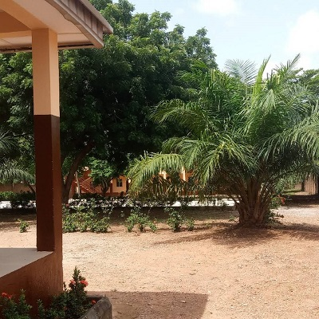

HOPE RESOURCE: an NGO for Mental Health Advocacy, Community Care & Rehabilitation
3 / 3

Residential Rehabilitation: A comprehensive structured residential rehabilitation package with the goal of helping the residents achieve their highest level of independence.
Transitional Accomodation: Low support residential service, for clients who need additional guidance before moving back to the community from hospital wards (halfway house).
Residential Rehabilitation:A comprehensive structured residential rehabilitation package with the goal of helping the residents achieve their highest level of independence.
Extended Residential Rehabilitation: Provides a safe haven for those who need the continued support of a structured residential programme.
Co-Morbid Residential Rehabilitation: Designed specifically to meet the unique rehabilitation needs of people who have a mental illness and are also struggling with alcohol and/or substance use.
Community Aftercare & Support: Supports individuals who have participated in our residential programme and are now residing independently within the community.
Contact US
For further enquiries, please contact: Dr Timothy Olaolu Adebowale Project Director